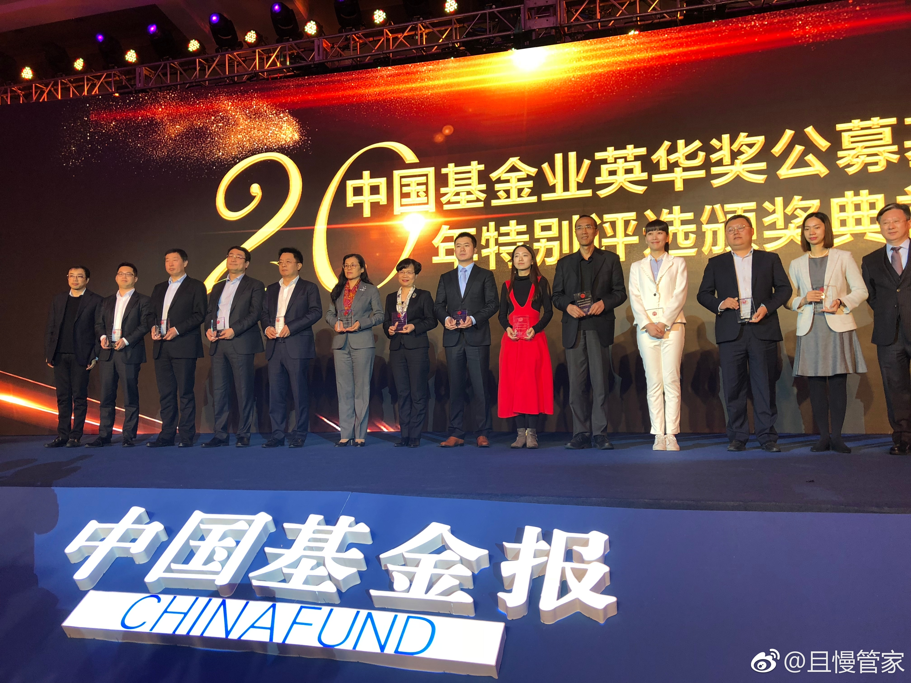
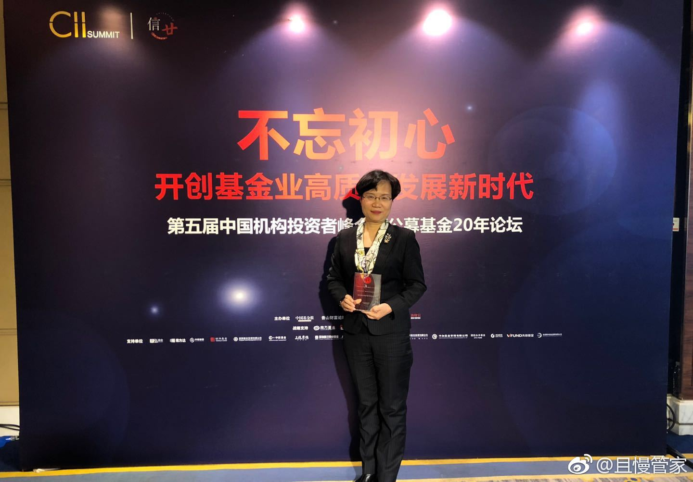
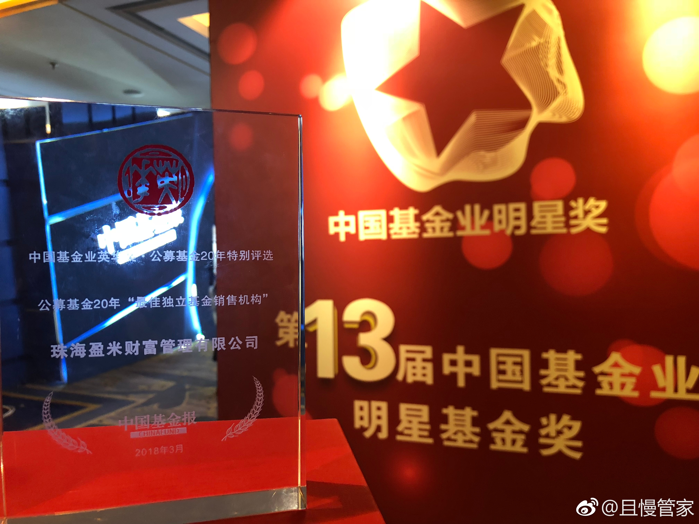
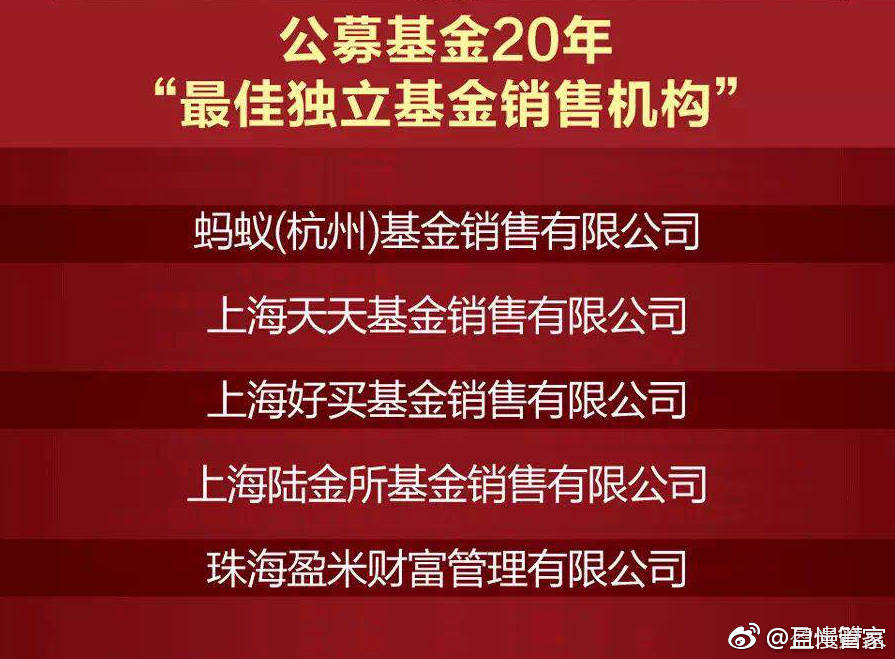

回复@asdasdsadasdadad:我也许会买，但绝对不会买很多。甚至只会买一点。只因为一点：目前不合法。没有正规可靠的交易所，没有资金进出安全性保证，没有法律保护，让我把积累了这么多年的资产买进去，我暂时接受不了。买一点玩玩可以，买太多不可能。等什么时候有了合法的投资途径，我才会考虑正式投入---:抱歉，作者已设置仅展示半年内微博，此微博已不可见。
@且慢管家:盈米财富凭借行业变革者之勇气，重构基金销售的价值链，践行买方投顾等行业贡献，与天天、蚂蚁等行业前辈同获基金行业重磅大奖【最佳独立基金销售机构】我们将不忘初心，继续砥砺前行。 
以前我写过一篇文章，整个证券市场是一个丛林。有它整个的生态系统。食物链从高到低。做为比较低层次的生物，基本处于食物链底部的人，想要在这市场中不死，然后还越来越大，实力越来越强，一定要有特别的能力。第一步是找到自己在食物链中的位置，第二部是找到活下去的方法。比如，死死盯住猎物。等它进入自己的攻击范围，出其不意一跃而起死死咬住对方的喉咙。把战利品带回家，储存能量，继续盯着下一个目标。战斗两分钟，等待一整天。每天在丛林里走来走去，这打一下那摸一下，开场第一幕就要被食物链上层发射的二向箔干掉。